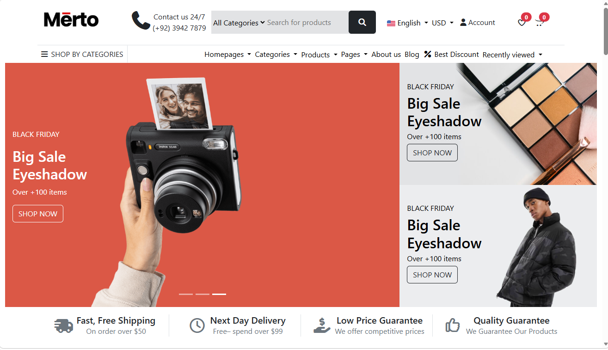

[ PROJ / 01 ]
E-Commerce Product Page
Brief: build a responsive product showcase with filters and categories.
Built a dynamic product grid with interactive cards and hover effects, dynamic filtering via JavaScript, and full responsive testing across devices.
View Code on GitHub →